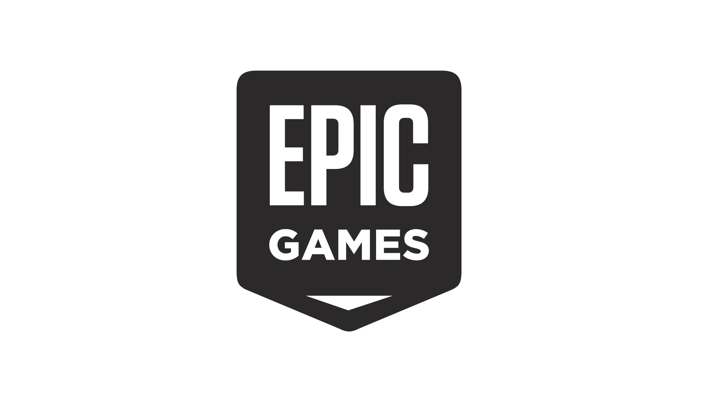

Fortnite né en juillet 2017 sur ps4, xbox one et PC dans son premier mode nommé sauver le monde (mettre lien vers l'article sur fortnite sauver le monde ). Créé par Epic Games, le studio derrière Gears of Wars et le créateur du fameux moteur unreal engine. Il vient de la tête de Darren Sugget, d'une idée de mélanger 2 grands jeux à succès qui sont Minecraft et Left 4 Dead 2.
Le premier mode de Fortnite a FLOPPÉ. C'est un mode PVE, c'est à dire joueur contre l'environnement. Dans ce mode Fortnite est présenté comme un jeu de survie, bac à sable en coopération à 4 joueurs. Où il faut survivre à de nombreuses vagues de zombies en construisant des structures et en utilisant des armes en TPS (point de vue à la troisième personne) pour défendre des positions stratégiques afin de récupérer de l'équipement et de pouvoir ouvrir des lootboxs. C'est une sorte de TPS Builder / Tower Defense, et c'est pour cela que le jeu a floppé . Le mode de jeux n'avait pas vraiment d'âme puisqu'il mélangeait trop de styles de jeux sans rien ajouter.Au sein de ce mode, le jeu était un "game as service" (vers l'article sur les Games as service) "Buy To play" (Il faut l'acheter pour jouer ).
Pour plus d'informations cliquez Ici

Le mode le plus connu du jeu. C'est lui qui a popularisé la mode Fortnite et qui a permis à ce jeu soit disant sans âme de devenir un phénomène mondial et l'un des jeux les plus connus au monde actuellement. Il est le plus acteur du monde du battle royale et est F2P. Il est presque disponible sur toutes les plateformes vidéoludiques existantes et est le game as service parfait. Il a popularisé les jeux à saisons et battle-pass deux choses menant à des achats semestriels pour du contenu continue.(mettre lien vers la catégorie game as service) Fortnite battle Royale a réussi à trouver un marché précis qui n'avait rien pour combler leurs attentes. Il a été le premier BR sur console et à casualiser le mode de jeu afin d'impacter plus de monde. Il a créé le premier BR arcade, tout en étant free To play afin de toucher tous les jeunes joueurs de jeu vidéo n'ayant pas encore d'argent à dépenser. (lien vers mode Fortnite) Fortnite battle Royale est parfait économiquement parlant, en moyenne 7 joueurs sur 10 dépense 85 dollars chacun, ce qui équivaut à un jeu neuf venant de sortir et son premier dlc. Le jeu a compris comment retenir ses joueurs et attirer de la clientèle. Il attire grâce à la gratuité et retient grâce à son contenu infini arrivant quotidiennement, au battle pass te pressant à jouer pour rentabiliser l'achat de ce dernier et pour avoir des contenus exclusifs.
Pour plus d'informations cliquez Ici
Mais donc pourquoi Fortnite polluerait-il ?